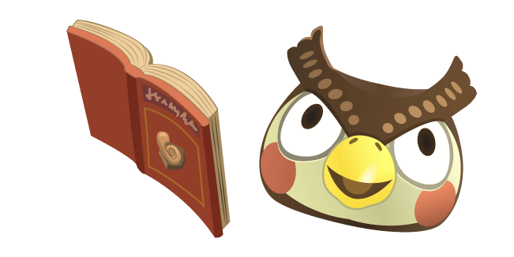
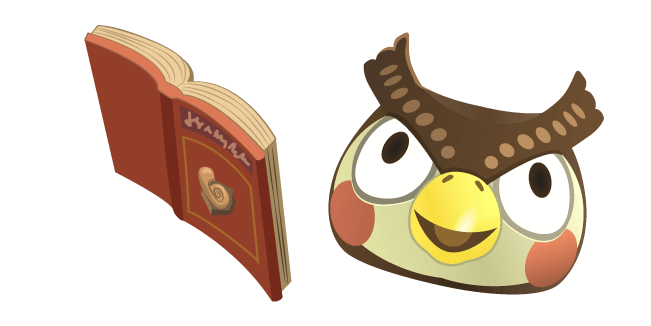

Welcome to the ACNH Database!
Welcome to the ACNH Database!
A Fan Project by Adam Morsa
Features
 Villagers
Villagers
- Search villagers by name, species, personality, or birthday.
- Enjoy discovering each villager's personal quote and catchphrase.
- Note: Due to a lack of recent API updates, this project does not currently display the 16 new villagers added in the v2.0 update. I'm looking into addressing this when I can.
Critters
- Search bugs, fish, and sea creatures by species, location, rarity, or month available.
- Easily see the sell price and time available of every critter at a glance.
- Critters that are currently available to catch are automagically highlighted.
- Click on a critter to read the full speech given by museum curator Blathers when that critter is donated.
Fossils & Art
- Search fossils and art by name.
- Click on a fossil to read the full speech given by museum curator Blathers when that fossil is donated.
- Click on an art piece to read the museum description.
- Note: There's more I want do with these sections, but am limited by the API. May or may not become much more awesome in the future.
Ambience
- Enjoy the soothing soundtrack of AC:NH as you browse the database. The track played syncs up to your local time for the authentic Animal Crossing experience.
- Oh no, is the 2pm music playing? Have no fear, toggle the music off with the speaker button at the top of the page.
- Prefer the rain to the heat of the sun? So do I. Click the weather icon at the top to bring on the rain, and enjoy the accompanying rainy music track.
More to come...?
- Maybe! Follow me on Twitter for updates on this and my other fun projects!
- Thanks so much for visiting! I hope you have as much fun playing with this app as I did building it!
- Click or tap anywhere to get started!
 
